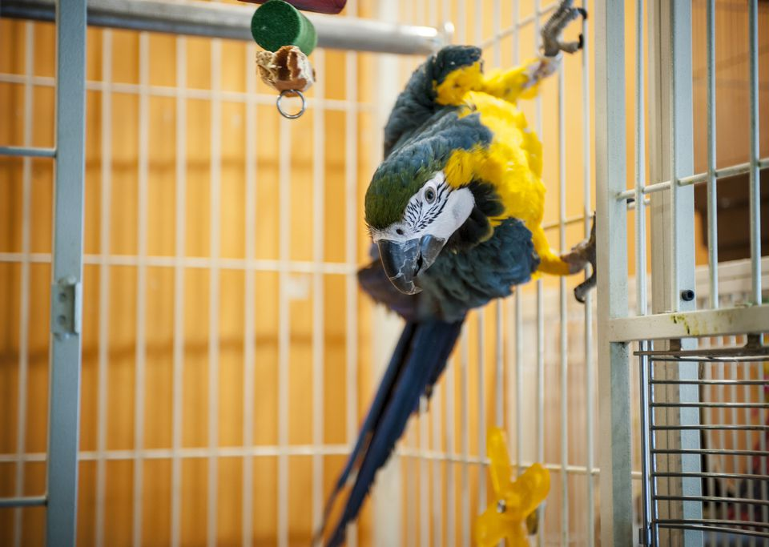

Bird is the Word

Pet birds come in many sizes and colors — ranging from finches with a wing
span of just a few inches, to macaws whose wing span can be up to four feet.
Personality traits vary widely among birds. Mentally most birds act similarly 3 or 4 year
old humans.Birds can make wonderful companions. Birds are beautiful to look at, and
many species have a remarkable ability for song and speech. They can be entertaining
companions for play and other activities.
The best reason for obtaining a pet bird is a desire to bring an intelligent,
sensitive, and beautiful animal into your household. Once you have prepared yourself
and your home for a companion bird, you are on your way to enjoying an amazing relationship.